Создание игр в Roblox Studio
Анимация и скриптинг
Создание анимационных скриптов
В этом занятии нам предстоит поработать с использованием анимации, созданных в предыдущем занятии и разобрать способы их подключения к персонажу при помощи скриптов.
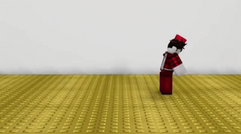В процессе выполнения заданий этого занятия желательно использовать анимации, созданные в ходе предыдущего: анимации танца и удара. Если же эти анимации не подготовлены, тогда можете использовать любые другие.
Любая анимация, созданная в Animation Editor, называется «клип анимации». Для того, чтобы созданные анимационные клипы могли быть использованы игровым персонажем в процессе игры, необходимо привязать их при помощи скриптов.
Есть несколько способов запрограммировать воспроизведение анимации персонажем, как игровым, так и неигровым, однако в этом занятии мы рассмотрим два основных подхода:
• замена базовых анимаций, подгружаемых по умолчанию;
• воспроизведение анимации по нажатию клавиши на клавиатуре.
Замена встроенных анимаций
Первый способ воспроизведения пользовательских анимаций заключается в замене ими встроенных анимаций, подгружающихся к любому персонажу по умолчанию. Этот подход используется, когда необходимо кастомизировать общие движения персонажа, если по какой-то причине вас не устраивают стоковые варианты.
Таким образом можно заменять анимации ходьбы, бега, ожидания, прыжка и так далее. Так как в предыдущем занятии мы сделали анимацию танца, в этой части занятия мы рассмотрим, как заменить именно её.
Система эмоций в Roblox
Танец - одна из встроенных эмоций, которая может вызываться по соответствующей команде в игровом чате. Прежде чем приступать к замене анимации, покажите детям, как можно заставить вашего аватара танцевать.
Запустите игру и откройте игровой чат (наведитесь мышкой в левый верхний угол экрана или нажмите на клавишу «/»)
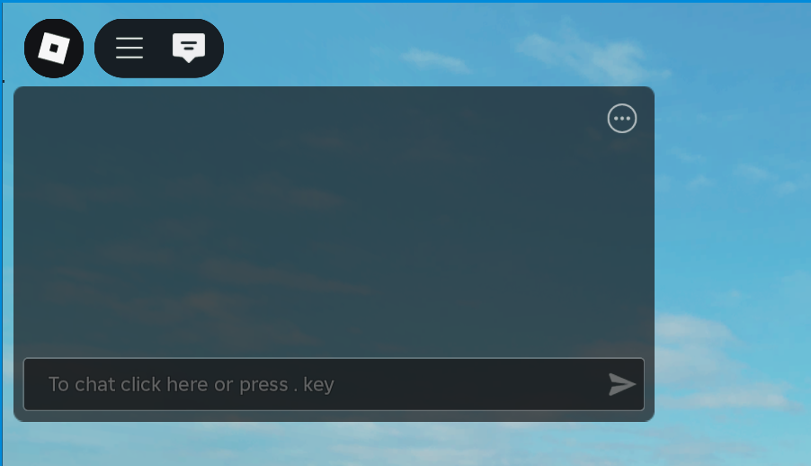Чтобы ваш персонаж начал танцевать, введите в чат команду /e dance. После ее ввода персонаж начнёт танцевать:
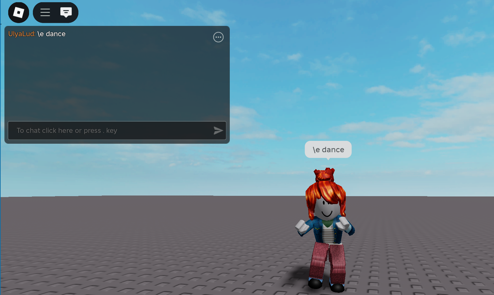Аватар, игрок и система хранения анимаций
Любой игрок, с точки зрения игровых сервисов Roblox, представляет из себя две раздельные сущности:
• Аватар - физический персонаж, которого вы видите на экране и которым вы управляете;
• Игрок - управляющая сущность, невидимая в игре, через которую осуществляется все управление и все действия, совершаемые внутри игры.
Эту систему можно сравнить с машинкой на радиоуправлении. Аватар - это машинка, а пульт управления - игрок. Когда машинка едет по асфальту, людям кажется, что она едет самостоятельно, однако, все управление осуществляется на пульте управления, скрытом от глаз наблюдателя, и без пилота машинка будет просто стоять на месте.
Технически, аватар, как и игрок, не существует внутри самой игры - он хранится на сервере и в каждую игру загружается его копия. Это сделано для того, чтобы вы могли видеть одного и того же персонажа в любой игре Roblox.
Так как аватар хранится на сервере, у нас нет возможности заменить его анимацию, подменив ее в окне Explorer. Чтобы это сделать, придётся использовать скрипты.
Запустите игру и раскройте окно Explorer. В workspace найдите вашего персонажа, раскройте его дочерние объекты и найдите специальный объект Animate.
Это локальный скрипт, содержащий в себе инструкции по воспроизведению анимации. Он берет анимации, находящиеся в его дочерних объектах и использует их в определённых в нем заранее ситуациях. Чтобы воспроизвести альтернативную анимацию, необходимо заменить на нее одну из встроенных дочерних анимации.
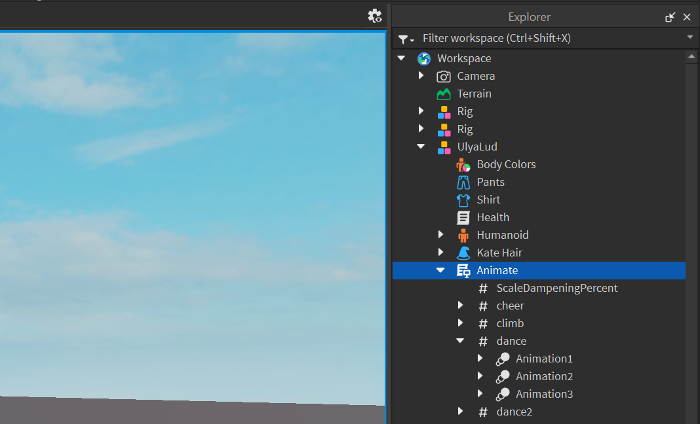Раскройте список дочерних объектов. Внутри вы найдёте анимацию dance, раскройте также и её. Эта анимация состоит из трех клипов анимации. Мы заменим один из них - Animation1. Завершите симуляцию.
Публикация анимации
Чтобы использовать анимацию, созданную в прошлом занятии, её нужно сперва опубликовать в ToolBox. Откройте анимацию танца в Animation Editor, после чего нажмите на три точки и выберите опцию Publish to Roblox.
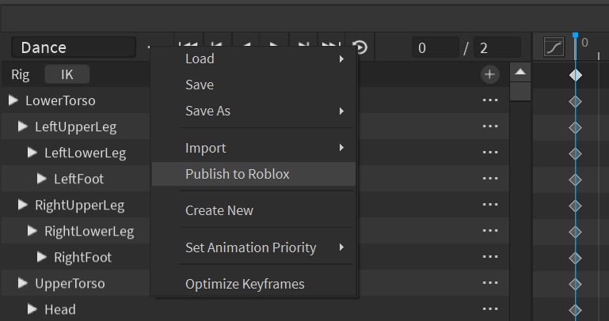В открывшемся окне назовите эту анимацию, добавьте описание и нажмите на Save:
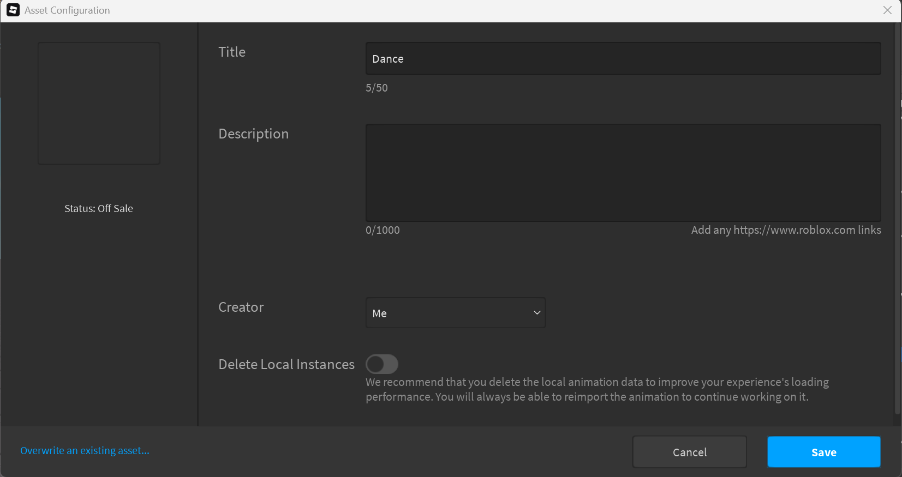Теперь эту анимацию можно найти в тулбоксе, для этого переключитесь на вкладку опубликованных вами объектов (лампочка), смените режим на Animations и найдите ее в списке.
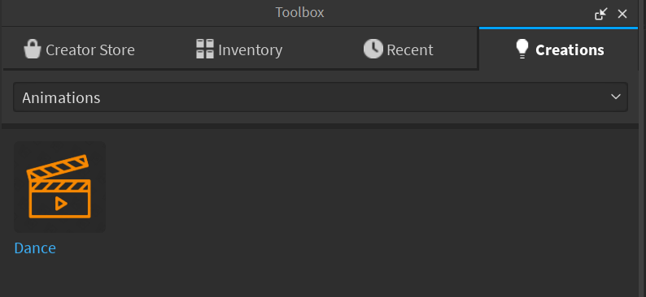Создание скрипта
Так как мы будем заменять одну из базовых анимаций, нужно сделать на так, чтобы она заменялась в тот момент, когда игрок подключается к игре и его аватар загружается с сервера.
Скрипт, который будет выполнять эти действия, должен отслеживать статус всех игроков и работать автоматически, поэтому создать его нужно на стороне сервера.
В окне Explorer найдите сервис Server Script Service и создайте скрипт, назовите его DanceAnimChange:
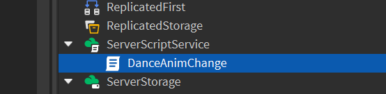Скрипт должен выполняться в двух случаях: когда аватар игрока будет впервые загружен на карту, а также каждый раз, когда игрок будет умирать и аватар будет заново создаваться на спаун поинт.
Как уже говорилось ранее, игрок с точки зрения Roblox - это две отдельные сущности: Player (игрок) и Character (аватар). Все игроки записываются в специальный сервис, который называется Players. Когда игра запущена, в этом сервисе отображаются все подключенные игроки. Для каждого из них создается свой связанный аватар, который добавляется в Workspace.
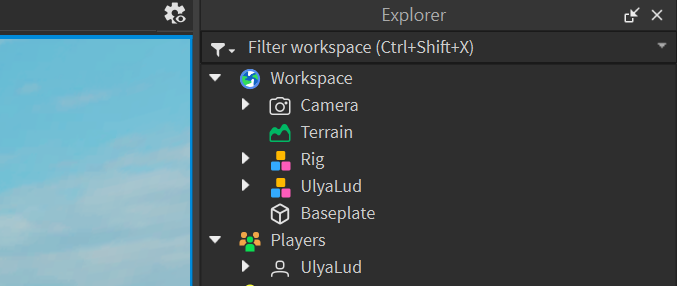Таким образом, скрипт должен отслеживать два раздельных события: подключение нового игрока, а также создание нового аватара. Для обоих этих событий есть два встроенных события Roblox: Player Added и CharacterAdded.
Создадим их в скрипте:
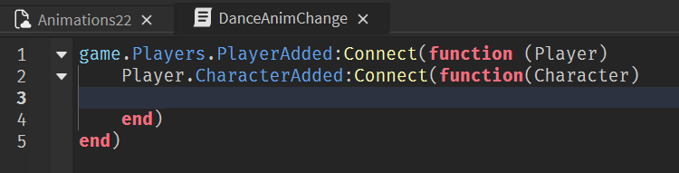Замена анимации
Следующим и последним действием в этом скрипте будет задмена анимации танца на нашу анимацию. Для этого необходимо найти ID анимации, загруженной в ToolBox. Найдите вашу анимацию в ToolBox, нажмите на неё правой клавиши мыши и выберите Copy Paste ID.
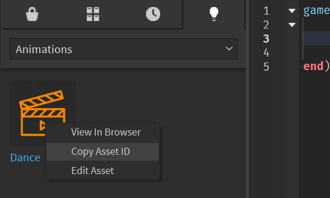Добавим строку замены анимационного клипа через параметр AnimationID. Вместо указанного на скриншоте ID вставьте ID вашей анимации, скопированный из тулбокса:
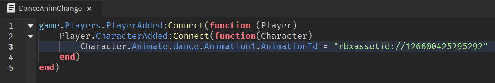Запустите игру и воспроизведите анимацию танца. Если все сделано правильно, персонаж воспроизведет один или два раза анимацию танца по умолчанию, после чего запустит вашу анимацию.
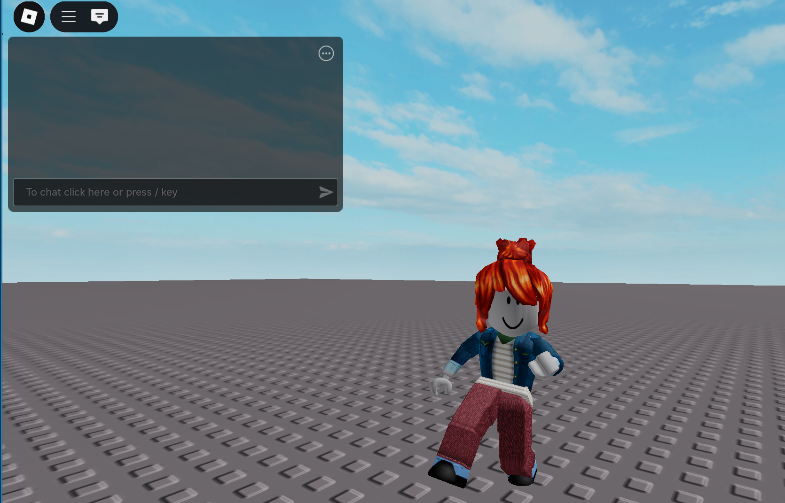Вызов анимации при нажатии на клавишу
Следующий способ воспроизведения анимации - вызов по нажатию на определённую клавишу. Этот способ используется для добавления нового действия в игровой процесс. Добавим в игру удар ногой по нажатию на клавишу F.
Публикация анимации удара. Приоритеты анимаций
Чтобы использовать созданную анимацию удара, как и в прошлый раз, сперва её нужно опубликовать. Однако, так как эта анимация является анимацией действия, перед этим её нужно настроить.
В Roblox существует система приоритета анимаций. Есть четыре основных типа анимации: Core, Idle, Movement и Action.
Анимации Core - это базовые анимации, которые перебиваются любыми другими анимациями. Анимации Idle могут быть прерваны только анимацией движения или действия. Анимация Movement прерывают любую анимацию Idle или Core, но перебиваются анимацией действия. Анимация Action перебивает любую другую анимацию.
То есть, стоящий на месте персонаж начнёт двигаться, если нажать на кнопку движения - анимация ожидания прервется и вместо неё начнёт воспроизводиться анимация движения. При этом, если во время движения нажать на кнопку удара, персонаж воспроизводит анимацию удара, игнорируя тот факт, что он бежит и должен воспроизводить анимацию бега. Таким образом работают приоритеты анимации в Roblox.
Прежде чем опубликовать анимацию удара, необходимо установить её приоритет. Нажмите на три точки, откройте подменю Set Animation Priority и в предложенных вариантах выберите Action. После этого опубликуйте анимацию.
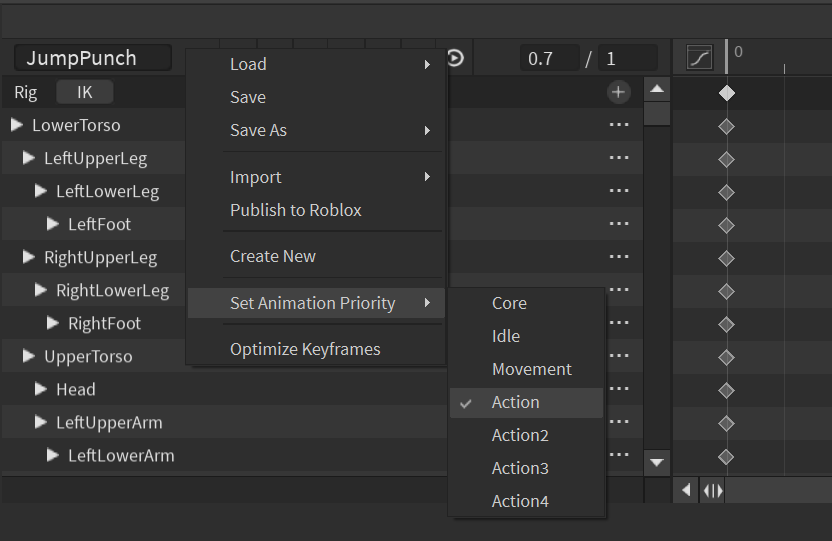Создание скрипта, отслеживающего нажатие клавиши
В отличие от предыдущего, этот скрипт должен отслеживать действия каждого игрока по отдельности, реагируя на нажатия целевой клавиши (в нашем случае F). Это действие происходит на компьютере игрока, то есть выполняется локально и скрипт должен копироваться на сторону клиента.
Найдите сервис StarterPlayer, внутри которого в подпапке StarterPlayerScripts создайте локальный скрипт. Этот скрипт будет добавляться каждому подключающемуся к серверу игроку.
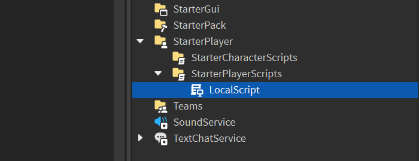Приступим к написанию скрипта. Сперва создадим две переменные. В первую переменную (player) будет записана ссылка на локального игрока, а во вторую (humanoid) - компонент Humanoid аватара этого игрока.

Добавим ещё одну переменную, в которой при помощи класса Instance создастся новая анимация. В следующей строке загрузим в неё нашу анимацию удара из тулбокса. Как и в прошлый раз, вместо ID, указанного на скриншоте, вставьте ID вашей анимации:
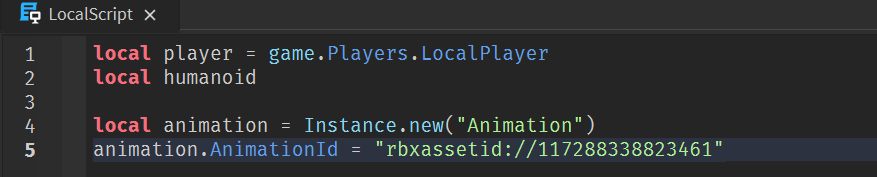Для подгрузки аватара с сервера требуется время, и, если сначала не выполнить проверку на появление персонажа, скрипт попытается сделать ссылку на несуществующий объект, запишет в качестве значения переменной nil, после чего попробует совершить с ней действия, сломается и перестанет работать.
Поэтому создадим обработчик события, чтобы отслеживать создание персонажа. Используем WaitForChild для ожидания инициализации объекта Humanoid
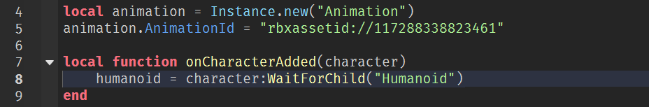Далее подключим обработчик к событию с помощью метода Connect:
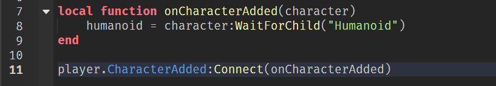Выполним проверку, если персонаж уже сущетсвует, то будет вызван обработчик события, написанный выше:
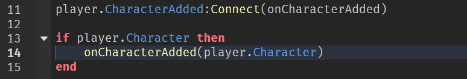После этого необходимо создать ссылку на специальный сервис User Input Service или UIS, отслеживающий ввод команд пользователем. Он регистрирует все команды игрока (нажатие клавиш, перемещение и клики мышью, сигналы с геймпада и т.д.). С его помощью можно отследить нажатие конкретной клавиши и, если оно произошло, добавить на него реакцию.
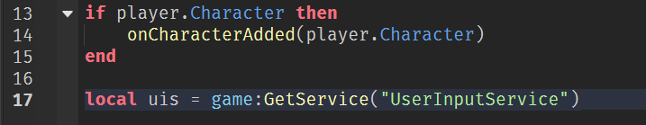Добавим событие, отслеживающее события ввода. Как только игрок нажмёт на любую клавишу, это событие запустится и выполнит указанные в нем действия:
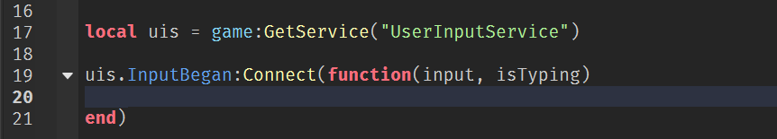В присоединенной функции есть два параметра: Input и isTyping. Первый параметр хранит в себе клавишу, на которую нажал игрок. Второй является логическим параметром и показывает, нажал ли игрок клавишу, пока печатал текст в чате или находясь в игре. Если клавиша была нажата в чате, это событие не должно восприниматься как команда персонажу и такое срабатывание должно игнорироваться.
Добавим фильтрацию ввода в чате:
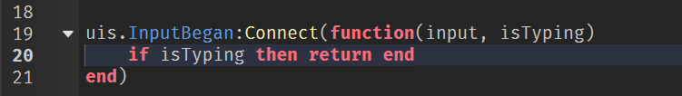У каждой клавиши на клавиатуре есть свой собственный цифровой код, который называется KeyCode. При нажатии на клавишу, он передается в параметр Input, благодаря чему мы всегда можем посмотреть, какая именно клавиша была нажата.
Создадим переменную KeyPressed и запишем в нее код нажатой клавиши. Теперь мы можем проверить, не совпал ли ее код с кодом клавиши F:
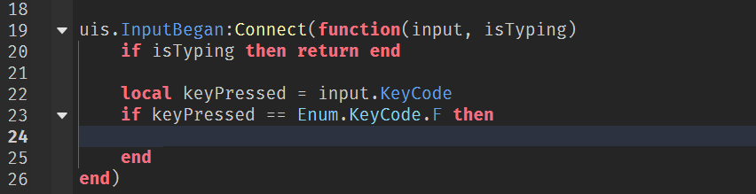Завершим скрипт. Используем метод LoadAnimation для загрузки анримации удара из переменной animation в компонент Humanoid как активную анимацию. После этого вызовем для этой переменной метод Play - он найдет новую активную анимацию персонажа и запустит ее.
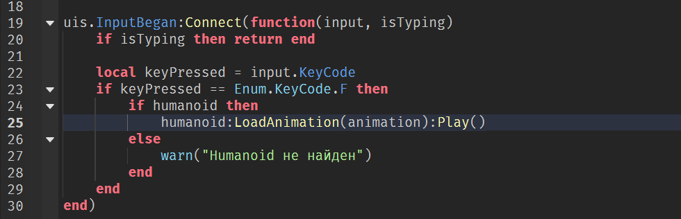Также для отслеживания нажатия клавиши можно добавить следующую строку. Если данная клавиша будет нажата во время игры, то в консоли будет выводиться информация об этом.
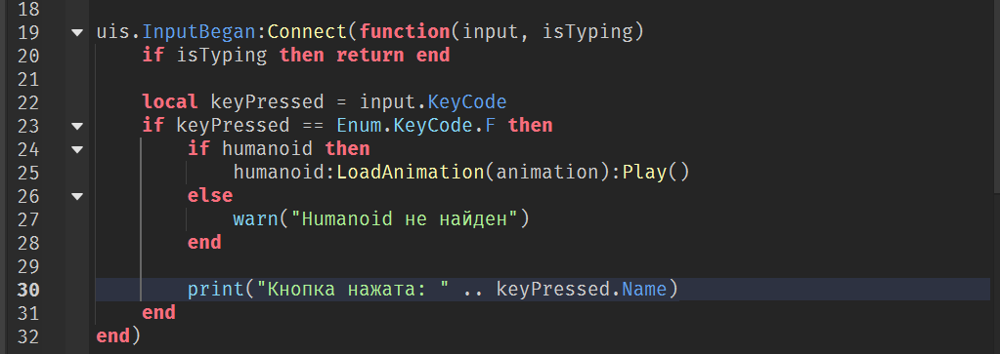Полный код с пояснениями представлен на скриншоте ниже:
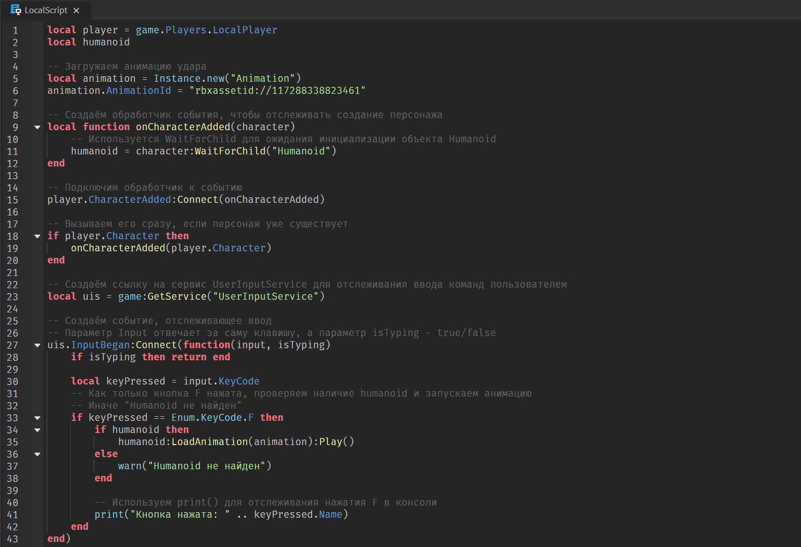Запустите игру и нажмите на клавишу F - персонаж воспроизведет анимацию удара.
Домашкаа 😁
Необходимо заменить одну из базовых анимаций эмоций на анимацию, которую вы делали в предыдущей домашней работе. По желанию можно попробовать привязать анимацию к нажатию клавиш.